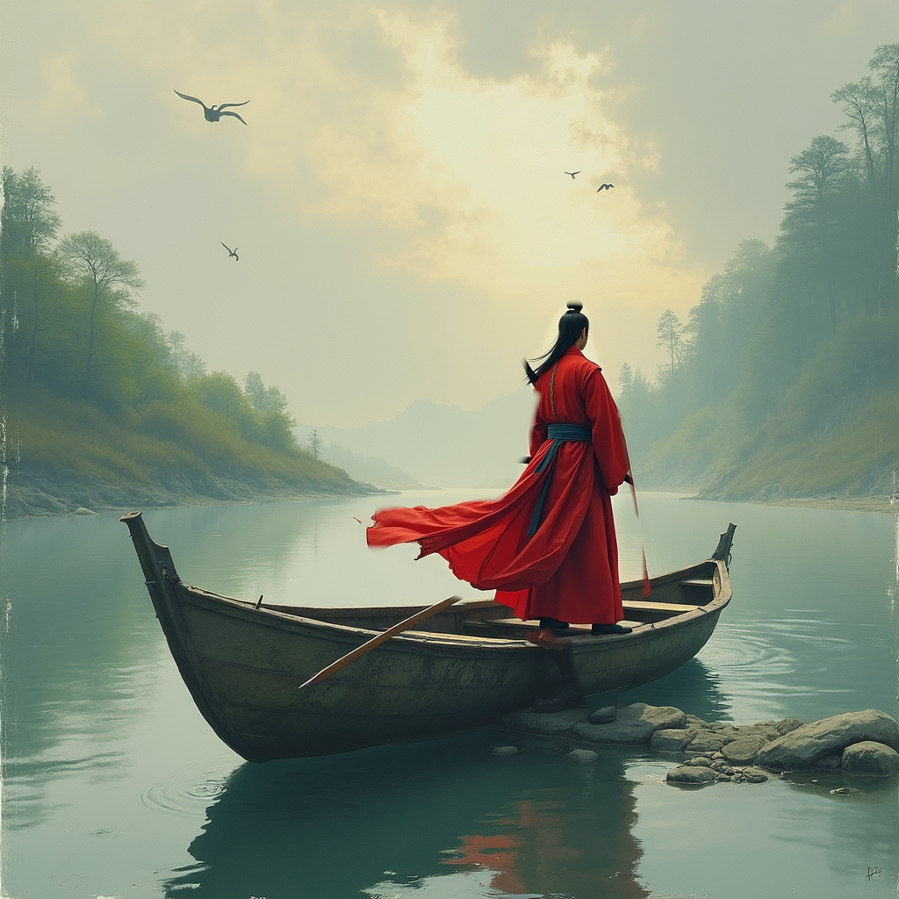
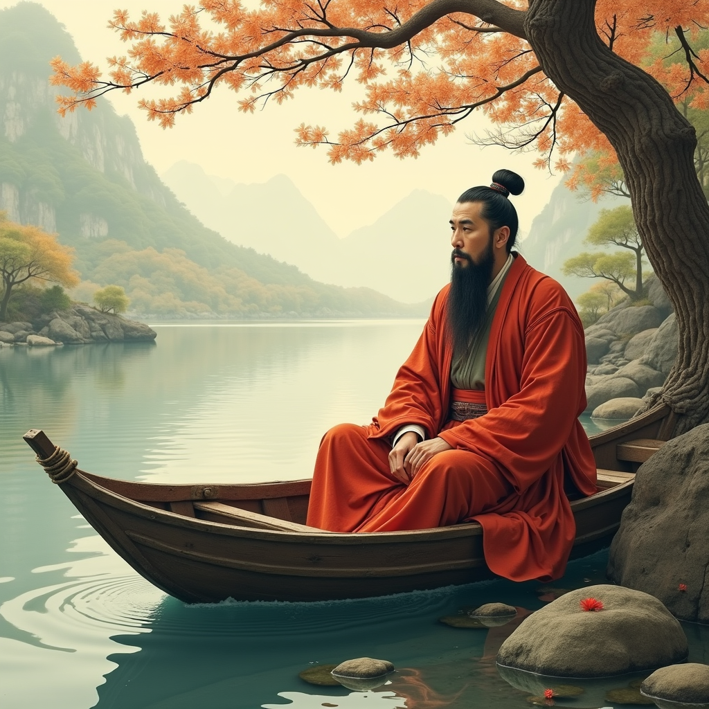

刻舟求剑 (kè zhōu qiú jiàn)
以下是基于成语 “刻舟求剑” 生成的文生视频，包括4张关键帧图片及描述。
关键帧描述
- 关键帧 1：男子站在小船上，手握剑，目光坚定。
- 关键帧 2：男子在船的侧面刻下标记，准备找到掉入水中的剑。
- 关键帧 3：船已经漂移，男子专注于刻舟，未察觉船已移动。
- 关键帧 4：男子意识到船已漂离原位置，他困惑地看着水面。
生成的关键帧


文生视频
视频配乐与解说
配乐：《悲伤进行曲》，营造出一种幽默却带有些许遗憾的氛围，契合成语所表达的愚笨与困境。
解说：结合成语“刻舟求剑”的寓意，逐步描述男子在船上刻舟、求剑的愚蠢行为，以及最后的觉醒。